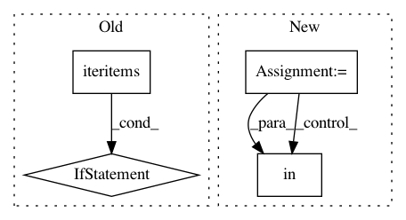

63ef8bfa3b63090437bd27bf1e04db7ae1eae3cf,nilmtk/stats/totalenergy.py,,get_total_energy,#Any#Any#,39
Before Change
energy = {}
data_source_rank = {} // overwrite Power with Energy with Energy(cumulative)
for (physical_quantity, ac_type), series in df.iteritems():
if physical_quantity == "power":
// Preference is to calculate energy from
// native Energy data rather than Power data
// so don"t overwrite with Power data.
if not energy.has_key(ac_type):
energy[ac_type] = _energy_for_power_series(
series, max_sample_period)
data_source_rank[ac_type] = 3 // least favourite
elif physical_quantity == "cumulative energy":
energy[ac_type] = series.iloc[-1] - series.iloc[0]
data_source_rank[ac_type] = 1 // favourite
elif (physical_quantity == "energy" and
After Change
physical_quantities = [physical_quantity
for (physical_quantity, col_ac_type) in df.keys()
if col_ac_type == ac_type]
for pq in PHYSICAL_QUANTITY_PREFS:
if pq in physical_quantities:
selected_columns.append((pq, ac_type))
break
energy = {}
for col in selected_columns:
print("Calculating energy for column", col)
(physical_quantity, ac_type) = col
In pattern: SUPERPATTERN
Frequency: 3
Non-data size: 4
Instances
Project Name: nilmtk/nilmtk
Commit Name: 63ef8bfa3b63090437bd27bf1e04db7ae1eae3cf
Time: 2014-11-27
Author: jack-list@xlk.org.uk
File Name: nilmtk/stats/totalenergy.py
Class Name:
Method Name: get_total_energy
Project Name: pantsbuild/pants
Commit Name: bf9599809214cbc3082eb7f39c0ad3155822a2c5
Time: 2014-02-12
Author: benjy@foursquare.com
File Name: src/python/twitter/pants/tasks/jvm_compile/scala/zinc_analysis.py
Class Name: ZincAnalysis
Method Name: split
Project Name: tensorflow/tensorboard
Commit Name: 6b0b3e0b6e68637c4f8810259864c1256e9fbf38
Time: 2020-12-14
Author: wchargin@gmail.com
File Name: tensorboard/plugins/graph/graphs_plugin.py
Class Name: GraphsPlugin
Method Name: info_impl